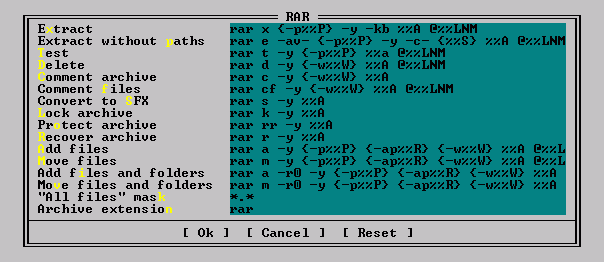

GetDefaultCommands
Get archiver command strings used by default
BOOL WINAPI GetDefaultCommands(
int Type,
int Command,
char *Dest
);
Parameters
Type
Archive type
Command
Archiver command number:
| Number | Description |
|---|
| 0 | extract |
| 1 | extract without path |
| 2 | test |
| 3 | delete |
| 4 | comment archive |
| 5 | comment files |
| 6 | convert to SFX |
| 7 | lock |
| 8 | add recovery record |
| 9 | recover |
| 10 | add files |
| 11 | move files |
| 12 | add files and folders |
| 13 | move files and folders |
| 14 | mask to select all files |
This is how it looks like in MultiArc plugin settings:

Dest
Buffer for copying commands. MultiArc expects string of no more than 512 bytes.
Return value
TRUE in case of success. FALSE if the specified archive type is unsupported. If the type is
supported but the required command is missing return TRUE and set Dest to an empty string.
See also: